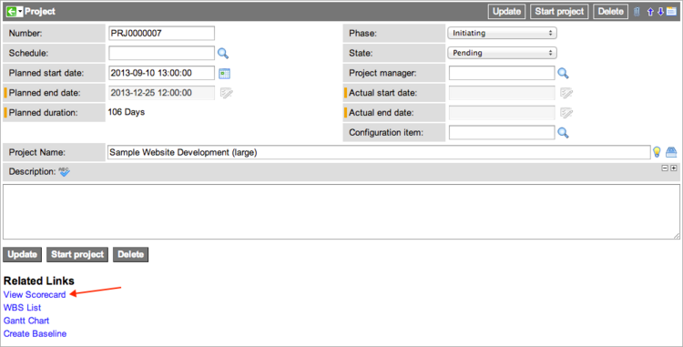

Assessment Scorecards
| |
Note: This article applies to Fuji. For more current information, see View an Assessment Scorecard at http://docs.servicenow.com
The Wiki page is no longer being updated. Please refer to http://docs.servicenow.com for the latest product documentation. |
Contents
1 Overview
The Assessments application prepares printable scorecards. A scorecard displays easy-to-interpret assessment results, in which the current calculated ratings for an assessable record are compared to previous ratings or to the ratings of other records. Users can examine ratings over time, compare ratings for one assessable record with all assessable records in a table, or compare the ratings of two assessable records. All ratings are averages for the time range selected. The system dynamically updates a scorecard each time you view it, so the ratings reflect recently completed assessments and scripted metrics.
Administrators can display a scorecard for any table in ServiceNow by creating a Related Link on assessable records. ServiceNow provides this link on the Company form by default when Vendor Performance is active.
The Vendor Performance application provides an enhanced scorecard view for vendors.
2 Creating Links to Scorecards
Users with the admin role can create UI actions that allow users to view scorecards from ServiceNow tables.
- Generate assessable records you want to evaluate.
- For example, you might create a metric type called Project to assess project management records.
- Navigate to System Definition > UI Actions.
- Open the View Scorecard record.
- Right-click the header bar and select Insert and Stay from the context menu to create a duplicate record.
- Change the Table name to the table on which you want the UI action to appear.
- For example, you might select Project [pm_project].
- Do not edit the Action name field or the Condition script.
- Save the record.
- Navigate to the table on which you created the UI action and open an assessable record.
- a. In this example, navigate to Project > Projects >All.
- b. Open any record in the list.
- c. Click View Scorecard under Related Links to open the scorecard for that assessable record.
- 
- The scorecard appears with the title in the form of <table display name> Scorecard. For example, a scorecard for an assessable record in the Project [pm_project] table is named Project Scorecard.
- Note: Content does not appear in the scorecard unless the associated assessable record has assessment results or related live feed conversations.
- Insert a new View Scorecard UI action record for each table where you want the related link to appear.
{kind=link}
{kind=link}
3 Viewing Scorecards
To view a scorecard:
- Navigate to Assessments > Assessable Records.
- Open a record.
- Under Related Links, click View Scorecard.
Scorecards contain a header that displays the name of the source record, and a section that compares the ratings. The Vendor Performance application provides an additional section for vendor scorecards and installs demo data that includes sample data for vendor assessments.
3.1 Ratings
The scorecard ratings section displays various ratings for the assessable record. Select one of several views that present different ratings:
Some views display an overall rating column, which lists categories used to evaluate the assessable record. Only categories in which the assessable record has been evaluated appear on the scorecard. If the ratings section does not display any data, the assessable record or category results associated to the assessable record have been deleted.
Click a category to view the category record. Point to a category to display a line chart that shows the rating trend for that category.
{kind=link}
3.1.1 Averages
The Averages view compares the current ratings for an assessable record in each metric category with the average, minimum, and maximum values from all assessable records in the filter. All ratings are from assessments generated over the trailing twelve months (TTM).
Select a filter option to compare the current record against all assessable records in that filter. An assessment administrator configures these options in the Filter field field in the Assessment Metric Type form.
{kind=link}
Rating variances are highlighted as follows:
- Red: Ratings are below average in this category. The Diff value displays a negative number.
- Green: Ratings are above average in this category. The Diff value displays a positive number.
- White: Ratings are average in this category. The Diff value is 0.0.
In the following example, the ratings of the current group are compared against other groups for which Don Goodliffe is the manager.
{kind=link}
3.1.2 Categories
The Categories view displays a bar chart showing the average ratings for each category in the selected time interval. Select from these reporting periods:
- All History
- Last 3 Months
- Last 12 Months
{kind=link}
3.1.3 Category Metrics
The Category Metrics view displays the weighted average results for each metric within a category. Use this view to learn how individual metrics affect the overall rating for the category. Select a metric category from the choice list to display the chart.
{kind=link}
3.1.4 Head to Head Compare
The Head to Head Compare view allows you to compare the ratings of two assessable records of the same type. Select an assessable record from the choice list to compare against the current record's trailing twelve month (TTM) ratings. The Diff column displays the difference between each assessable record's most recent TTM ratings. By default, the system selects the first assessable record in the list when you open this view. The scorecard displays three years of ratings for the comparison record. All ratings are expressed as averages.
{kind=link}
3.1.5 History
The History view compares the current ratings for each category with ratings from the previous three years or four quarters. Ratings that have declined are highlighted in red and display negative numbers. Ratings that have improved are highlighted in green with positive numbers. Arrow icons beside the values in the Diff column indicate the trend of the current assessment against the previous assessment.
- 3 Years: To calculate the current ratings, the system averages the ratings from the trailing twelve month (TTM) period. The Diff column shows the discrepancy between the current ratings and the previous calendar year's ratings.
{kind=link}
- 4 Quarters: Quarterly assessments compare the average rating for each category in the current quarter against the average ratings from the previous four quarters. The Diff column shows the discrepancy between the current ratings and the previous quarter's ratings. The column labels count backward, by quarter from the current quarter. For example, if the current quarter is the 3rd quarter of 2013, then the previous quarters appear as 2nd [2013], 1st [2013], 4th [2012], and 3rd [2012]. All four of the previous quarters appear, whether or not there was any data for those quarters.
{kind=link}
3.1.6 Live Feed
The Live Feed view displays live feed conversations that apply to the assessable record. Users can view the group feed, including tagged comments, and add comments of their own. To configure a Live Feed view, an assessment administrator selects the Live feed check box on the Assessable Record form. Live feed is available on the scorecard even if there are no category results for the other views.
The Live Feed view provides these viewing options:
- My Feed: Displays the user's My Feed preferences.
- Company: Displays the user's company feed.
- Groups: Displays all available groups and gives the logged in user the option to leave or join a group. Select a group to display that group's conversations.
- Tags: Displays all the tags found in live feed comments. Click on a tag to display the conversations containing that tag.
{kind=link}